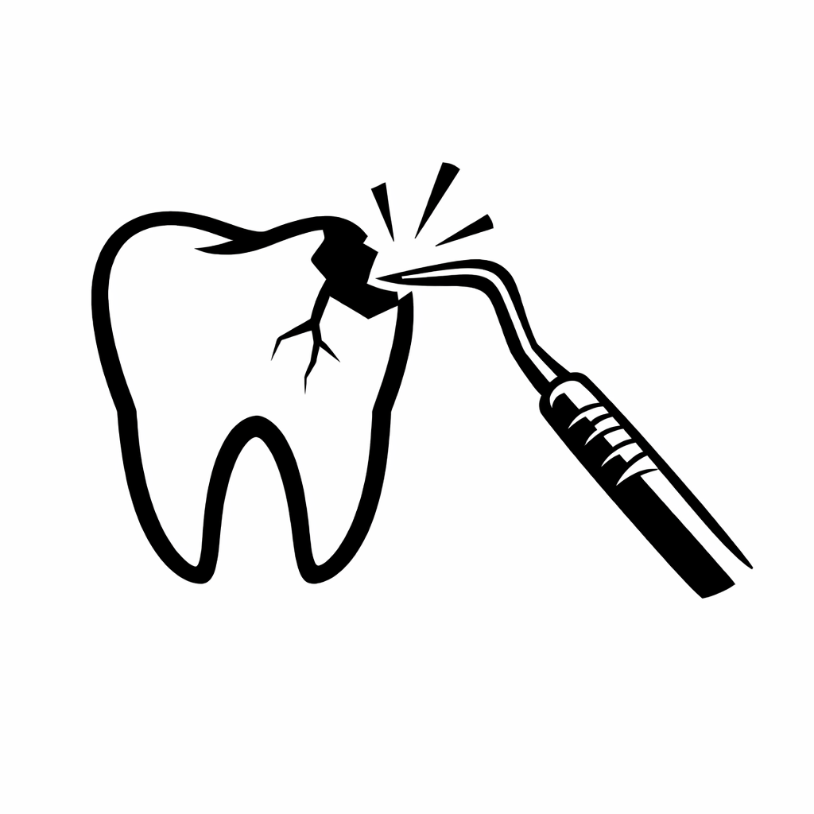

Best Practices GuideHandling Unexpected Patient Concerns After a Routine Dental Hygiene Procedure |
|
Purpose: Educational guidance only • No individuals or practices are identified In certain cases, if proper precision and technique are not maintained during a routine dental cleaning, unintended alterations to the enamel surface or incisal edges may occur. When a patient raises concerns about newly observed changes following a procedure, prompt reassessment, documentation, and supervisory review are essential to ensure patient safety and objective evaluation. This page provides general best practices for dental hygiene professionals and practice teams when a patient raises concerns after a routine procedure. The goal is patient safety, clear communication, and appropriate clinical escalation. Core Best Practices1) Pause and assess immediately 2) Involve appropriate supervision 3) Maintain a non-defensive communication style 4) Avoid minimizing the patient’s experience 5) Document objectively and thoroughly 6) Encourage follow-up (including independent evaluation when appropriate) 7) Learn from unresolved encounters Example Supporting ImageThe following images illustrates an example of dental damage observed after a routine cleaning in which excessive force is suspected. Imaging may be used to compare current findings with prior records to evaluate a patient’s concerns objectively, assess whether changes are new or preexisting, and inform appropriate follow-up care.
DisclaimerDisclaimer: This page presents general best practices and does not allege misconduct by any named individual. It is intended solely for educational purposes. |